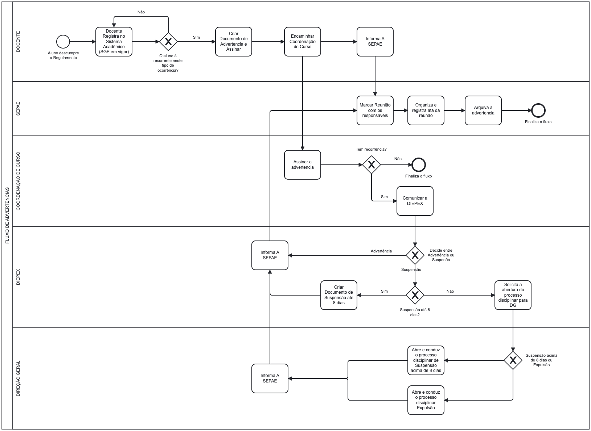

Para facilitar a compreensão do processo de aplicação de sanções disciplinares, este fluxograma visual detalha as etapas e as responsabilidades de cada setor, desde a ocorrência em sala de aula até as decisões da Direção de Ensino e da Direção Geral. Ele serve como um guia rápido para garantir que os procedimentos sejam seguidos de forma correta, justa e transparente.

Pontos-Chave do Fluxo
- DOCENTE: É o ponto de partida. Registra a ocorrência no sistema e, em caso de reincidência, cria e assina o Documento de Advertência, encaminhando-o à Coordenação de Curso e informando a SEPAE.
- SEPAE: Atua como o ponto de contato com a família. Agenda e realiza a reunião com os responsáveis, organiza a documentação e arquiva a advertência.
- COORDENAÇÃO DE CURSO: Valida a advertência, assina o documento e, se houver nova reincidência, comunica a DIEPEX para uma análise mais aprofundada.
- DIEPEX: É a instância decisória para casos recorrentes. Decide entre manter a advertência ou aplicar uma suspensão de até 8 dias. Se a situação exigir uma sanção mais severa, solicita a abertura de Processo Disciplinar à Direção Geral.
- DIREÇÃO GERAL: Atua nos casos mais graves, conduzindo os processos disciplinares que podem resultar em suspensão acima de 8 dias ou, em último caso, expulsão.
Para informações detalhadas sobre as normativas e os documentos, consulte o tópico "Sanções Disciplinares" no Guia de Processos Acadêmicos e Discentes.